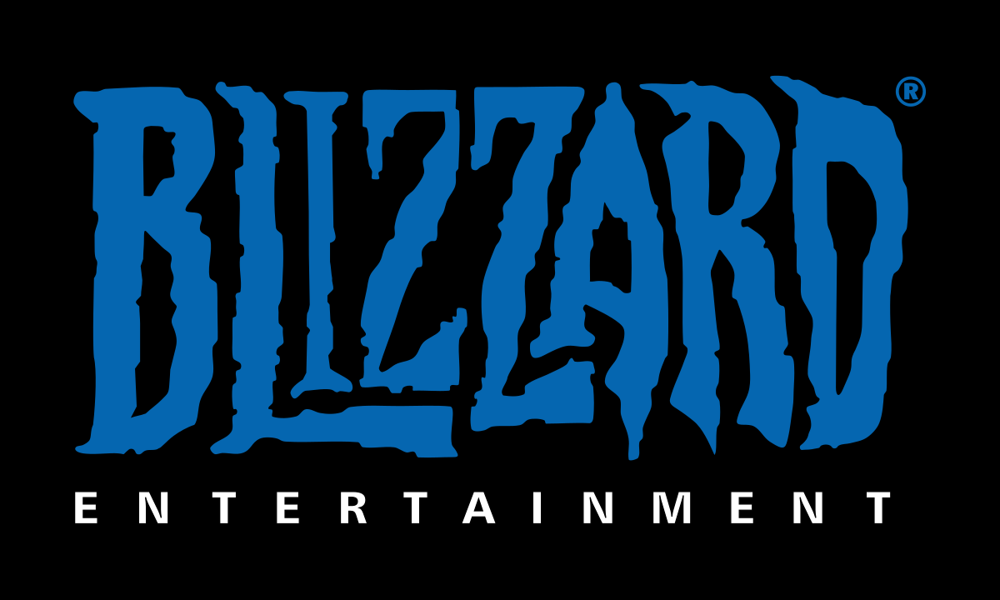
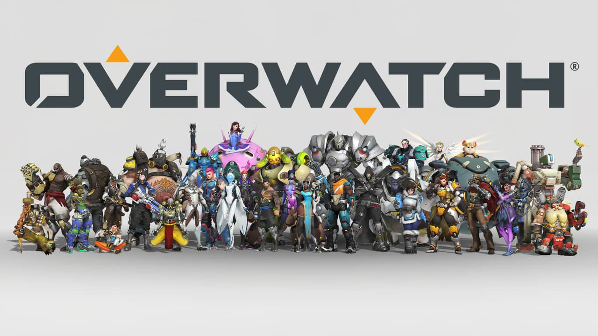

Történet
A játék készítéséről
Az Overwatch egy a Blizzard Entertainment által fejlesztett és kiadott többjátékos, csapat-orientált belső-nézetes lövöldözős videójáték. A játékot a 2014-es BlizzConon jelentették be, és 2016. május 24-én került kiadásra. Bejelentették továbbá, hogy a 2021-es évben kiadják az Overwatch 2-t, ami egy átformált hősőkkel játszódó, PvE játék lesz, ahol a képességeket személyre lehet szabni. Az Overwatch 2-ben bejövő új hősök mind bekerülnek majd az eredeti Overwatchba is.
Az overwatch univerzuma
Az Overwatch története egy alternatív Földön játszódik. 2016-ban az Omnica Corporation nevezetű globális iparvállalat létrehozza az önfejlesztő robotokat, az ominceket, de csalás miatt végül a világ több pontján felépült gyárait lekapcsolták. 30 évvel később egy kiterjedt vírusfertőzés hatására a gyárak önmaguktól újraindultak, és elkezdtek harci ominceket előállítani, akik aztán az emberiség ellen fordultak. Ez vezetett az Omnic Crisis-hez (Ominc krízis). A háború során tucatnyi ország próbált egyedül helytállni az omnicek által korábban felállított hadseregeivel szemben, sikertelenül. Végül az ENS úgy döntött, hogy létrehoz egy elit csapásmérő egységet, ez lett az Overwatch. Az új egység hatékonyan vette fel a harcot az omnicek ellen a világ bármely pontján, és bár végül megnyerve a háborút elhozta a békét az emberiség számára, két legjelentősebb tagja, a vezető Jack Morrison és a másodtiszt (és Morrison barátja) Gabriel Reyes között komoly ellentét kezdett kibontakozni.
A háború után Morrison átszervezte az egységet, Gabriel pedig egy titkos alegység, a Blackwatch vezetője lett. A béke beköszöntével az Overwatch tagjait hősökként tisztelték, mely egyfajta globális békefenntartó erővé vált, komoly kutatásokba kezdett, soraiba pedig felvette a legtehetségesebb katonákat, kutatókat és orvosokat. Ám hamarosan fény derült a Blackwatch sötét, korrupt, emberi jogokat eltipró üzelmeire, ezért az Overwatch-on belül hatalmi harc bontakozott ki az egyre népszerűtlenebbé váló egység teljes irányításáért. Ennek tetőfoka az egység svájci főhadiszállásán történt nyílt konfliktus lett, ahol egy ismeretlen eredetű robbanás során állítólagosan életét vesztette Morrison és Gabriel egyaránt. Ezután az Overwatch nemzetközi megítélése rohamosan romlani kezdett, és a korábban ünnepelt egység legjobb tagjai elhagyták azt, majd illegalitásba kényszerültek. Az Overwatch korábbi tagjai közül sokan továbbra segítették az embereket szerte a világon, de tették ezt egymaguk, hiszen az ENSZ az egység további bevetéseit büntetendőnek nyilvánította, majd feloszlatta azt.
Évekkel később egy rejtélyes személy, Soldier: 76 az Overwatch összeomlásának valódi okait kereste, miközben annak hátramaradt létesítményeit őrizte, illetve fellépett a háttérben megbújó pénzügyi intézményekkel és egyéb társaságokkal szemben, emiatt pedig nemzetközi körözés alá került. Ugyanakkor egy másik ugyancsak titokzatos illető, Reaper azt a célt tűzte ki maga elé, hogy módszeresen felkutatja és megöli az Overwatch korábbi tagjait. A könyörtelen zsoldos ezért megalapította a Talon nevezetű terroristaszervezetet, amely szerte a világon merényletekkel terrorizálta az ártatlanokat. Bár valós céljaik ismeretlenek, a terroristák egyik lehetséges célkitűzése az emberek és az ominc-ek közötti újabb háború kirobbantása lehet, aminek kiindulópontja a két létforma közötti harmonikus együttélést hirdető népszerű omnic, Tekhartha Mondatta elleni merénylet volt. A támadás során az ominc "meghalt", nem hivatalosan ez vezetett a most folyó Second Omnic Crisis-hez (Második ominc krízis). A világon ismét eluralkodni látszott a káosz és pusztulás, ezért az Overwatch egyik illegalitásba vonult tagja, Winston az egység egyik állomáshelyéről -a tiltó egyezményt megszegve- visszahívta az összes elérthető tagot, akik újra együtt szállhattak szembe a világban történő igazságtalanságokkal szemben.